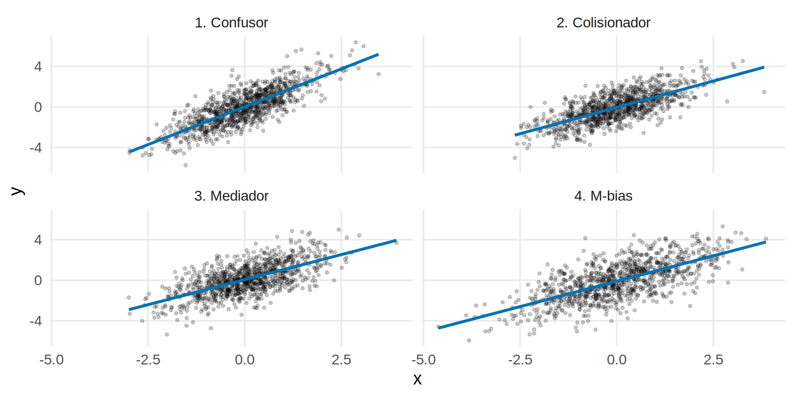

library(tidyverse)
library(MatchIt)
source("R/funciones_epi.R") # dibujar_dag(), smd()
source("R/funciones_extra_a.R") # caminos_dag(), conjuntos_ajuste(), num()
theme_set(theme_minimal(base_size = 13) + theme(panel.grid.minor = element_blank()))Diagramas causales (DAG): qué ajustar y qué no
Nota🩺 Escenario
Los servicios con más nefrólogos por habitante reportan más casos de ERC. ¿Más nefrólogos causan más ERC? Más bien, donde hay más nefrólogos se detecta y se registra más ERC (sesgo de vigilancia). Una asociación puede ser real y, aun así, no ser la causa que imaginamos. Los grafos acíclicos dirigidos (DAG) te obligan a dibujar qué esperas que cause qué y, a partir de ahí, a decidir qué variables ajustar y cuáles no. “Correlación no implica causalidad” es cierto, pero insuficiente: como nefrólogos sí necesitamos decidir si un fármaco, una dieta o un procedimiento causa un mejor desenlace.
Lo que vamos a hacer
- Leer y dibujar un DAG, y reconocer las tres estructuras básicas: confusor, mediador y colisionador.
- Ver con simulaciones que los datos solos no dicen qué ajustar: lo dice el DAG.
- Aplicar el criterio de la puerta trasera para elegir el conjunto de ajuste.
- Comparar tres formas de ajustar: regresión, emparejamiento y ponderación.
Paso 1. ¿Qué es un DAG?
Un DAG tiene tres elementos:
- Nodos: variables, medidas o no medidas.
- Flechas: \(A \rightarrow B\) afirma que A es causa directa de B. Si no hay flecha, estás afirmando que no hay efecto directo: las ausencias de flechas son suposiciones fuertes.
- Acíclico: no hay ciclos. Si hay retroalimentación (TFGe → anemia → TFGe), se representa con variables en distintos momentos (\(TFGe_{t-1} \rightarrow Hb_t \rightarrow TFGe_t\)).
Cómo dibujar tu primer DAG: (1) escribe la exposición y el desenlace; (2) pregúntate qué variables causan (o podrían causar) la exposición y cuáles el desenlace; las que causan ambas son confusores; (3) añade lo que está entre exposición y desenlace (mediadores) y lo que ambos causan (colisionadores); (4) incluye también lo que no mediste; (5) pide a un colega nefrólogo que lo critique: ahí está el valor del DAG.
Paso 2. Tres estructuras básicas
Cualquier DAG complejo se construye con tres piezas. Entenderlas basta para saber qué ajustar.
panel <- function(nodos, aristas, titulo) {
dibujar_dag(nodos, aristas, tam_texto = 3.3, expandir = c(0.45, 0.25)) + labs(title = titulo) +
theme(legend.position = "none", plot.title = element_text(face = "bold", size = 11))
}
pA <- panel(
tribble(~nombre,~x,~y,~etiqueta,~rol,
"X",1,1,"iSGLT2","exposicion", "M",2,1.6,"↓ Albuminuria","mediador",
"Y",3,1,"Pendiente\nTFGe","desenlace"),
tribble(~de,~a, "X","M", "M","Y"), "A. Mediador (cadena)")
pB <- panel(
tribble(~nombre,~x,~y,~etiqueta,~rol,
"X",1,1,"iSGLT2","exposicion", "C",2,1.6,"Fragilidad","confusor",
"Y",3,1,"Pendiente\nTFGe","desenlace"),
tribble(~de,~a, "C","X", "C","Y"), "B. Confusor (bifurcación)")
pC <- panel(
tribble(~nombre,~x,~y,~etiqueta,~rol,
"X",1,1,"Uso de AINE","exposicion", "K",2,1.6,"Hospitalización","colisionador",
"Y",3,1,"ICC\ndescompensada","desenlace"),
tribble(~de,~a, "X","K", "Y","K"), "C. Colisionador")
patchwork::wrap_plots(pA, pB, pC, nrow = 1)
| Estructura | ¿Transmite asociación entre X e Y? | ¿Qué hago? | Ejemplo |
|---|---|---|---|
| Mediador (\(X \to M \to Y\)) | Sí: es parte del efecto que queremos medir | No ajustar si quiero el efecto total | Albuminuria entre iSGLT2 y TFGe |
| Confusor (\(X \leftarrow C \to Y\)) | Sí: crea una asociación espuria | Ajustar (cierra el camino) | Fragilidad |
| Colisionador (\(X \to K \leftarrow Y\)) | No (el camino está cerrado) | No ajustar ni restringir por \(K\): abriría el camino y crearía una asociación falsa | Hospitalización |
Comprobémoslo con simulaciones sencillas (así verás por qué ocurre y no solo que ocurre).
Confusor: ajustar elimina la asociación espuria
set.seed(1)
n <- 5000
fragil <- rbinom(n, 1, 0.3) # confusor
tratado <- rbinom(n, 1, plogis(-0.5 - 1.5 * fragil)) # los frágiles reciben menos el fármaco
pendiente <- -2 - 1.0 * fragil + 0 * tratado + rnorm(n) # el fármaco NO tiene efecto en esta simulación
d_conf <- tibble(fragil, tratado, pendiente)
coef(lm(pendiente ~ tratado, d_conf))["tratado"] # sin ajustar: asociación espuria tratado
0.2266726 coef(lm(pendiente ~ tratado + fragil, d_conf))["tratado"] # ajustando: ≈ 0 tratado
-0.01058657 Mediador: ajustar elimina parte del efecto que queríamos medir
set.seed(2)
tratado <- rbinom(n, 1, 0.5) # aleatorizado: sin confusión
albumin <- 5 - 1.0 * tratado + rnorm(n) # el fármaco reduce la albuminuria
pendiente <- -1 - 0.6 * albumin + rnorm(n) # menos albuminuria => mejor pendiente
d_med <- tibble(tratado, albumin, pendiente)
coef(lm(pendiente ~ tratado, d_med))["tratado"] # efecto TOTAL (≈ 0.6) tratado
0.6796223 coef(lm(pendiente ~ tratado + albumin, d_med))["tratado"] # efecto directo (≈ 0): ¡"desapareció"! tratado
0.05622981 Al ajustar por albuminuria “eliminamos” el efecto porque el fármaco actúa a través de ella. Eso puede ser lo que queremos (efecto directo, análisis de mediación), pero no si queremos el efecto total.
Colisionador: ajustar crea una asociación que no existe
set.seed(3)
aine <- rbinom(n, 1, 0.30)
icc <- rbinom(n, 1, 0.20) # independientes entre sí
hosp <- rbinom(n, 1, plogis(-3 + 2.5 * aine + 2.5 * icc)) # ambos causan hospitalización
d_col <- tibble(aine, icc, hosp)
# En toda la población: sin asociación
coef(glm(icc ~ aine, binomial, d_col))["aine"] aine
0.009518216 # Restringiendo a hospitalizados (o ajustando por hospitalización): ¡asociación negativa falsa!
coef(glm(icc ~ aine, binomial, filter(d_col, hosp == 1)))["aine"] aine
-1.170867 La lógica: entre los hospitalizados, si un paciente no usó AINE, “tuvo que haber” otra razón para estar ahí, como la ICC. Por eso AINE e ICC parecen asociarse negativamente aunque sean independientes.
Paso 3. El cuarteto causal: los mismos datos, distinto DAG
La pregunta que más se hacen los residentes es: “¿meto esta variable al modelo o no?” Un experimento mental lo responde. Generamos cuatro conjuntos de datos (simulados), cada uno con una exposición \(X\), un desenlace \(Y\) y una tercera variable \(Z\) medida. En los cuatro, el efecto total real de \(X\) sobre \(Y\) es 1, y \(Z\) se asocia fuertemente con \(X\) e \(Y\). La diferencia está solo en el DAG:
- Confusor: \(Z\) causa \(X\) e \(Y\) (p. ej., \(Z\) = fragilidad).
- Colisionador: \(X\) e \(Y\) causan \(Z\) (p. ej., \(Z\) = hospitalización).
- Mediador: \(X\) causa \(Z\) y \(Z\) causa \(Y\) (p. ej., \(Z\) = albuminuria tras iniciar el fármaco).
- M-bias: \(Z\) es causada por dos variables no medidas, una que causa \(X\) y otra que causa \(Y\) (p. ej., \(Z\) = asistir a control regular, causado por la motivación del paciente y por sus síntomas).
set.seed(2025)
n <- 1000
# 1. Confusor
z1 <- rnorm(n); x1 <- 0.7 * z1 + rnorm(n, sd = 0.7); y1 <- 1 * x1 + 0.7 * z1 + rnorm(n)
# 2. Colisionador
x2 <- rnorm(n); y2 <- 1 * x2 + rnorm(n); z2 <- 0.8 * x2 + 0.8 * y2 + rnorm(n)
# 3. Mediador (efecto total = 0.5 directo + 0.6 * 0.8 indirecto, aprox. 1)
x3 <- rnorm(n); z3 <- 0.8 * x3 + rnorm(n); y3 <- 0.5 * x3 + 0.6 * z3 + rnorm(n)
# 4. M-bias: u1 -> X, u2 -> Y, y ambos -> Z (u1 y u2 no se miden)
u1 <- rnorm(n); u2 <- rnorm(n)
x4 <- 0.9 * u1 + rnorm(n); z4 <- 0.9 * u1 + 0.9 * u2 + rnorm(n); y4 <- 1 * x4 + 0.9 * u2 + rnorm(n)
cuarteto <- bind_rows(
tibble(escenario = "1. Confusor", x = x1, y = y1, z = z1),
tibble(escenario = "2. Colisionador", x = x2, y = y2, z = z2),
tibble(escenario = "3. Mediador", x = x3, y = y3, z = z3),
tibble(escenario = "4. M-bias", x = x4, y = y4, z = z4)
)
tabla_cuarteto <- cuarteto |>
group_by(escenario) |>
summarise(cor_xy = cor(x, y),
cor_xz = cor(x, z),
sin_ajustar = coef(lm(y ~ x))[["x"]],
ajustando_por_z = coef(lm(y ~ x + z))[["x"]]) |>
mutate(verdad = 1, `¿ajustar por Z?` = c("Sí", "No", "No", "No"))
tabla_cuarteto |> mutate(across(where(is.numeric), \(x) round(x, 2)))# A tibble: 4 × 7
escenario cor_xy cor_xz sin_ajustar ajustando_por_z verdad `¿ajustar por Z?`
<chr> <dbl> <dbl> <dbl> <dbl> <dbl> <chr>
1 1. Confusor 0.8 0.68 1.49 1.05 1 Sí
2 2. Colisio… 0.71 0.8 1.04 0.18 1 No
3 3. Mediador 0.65 0.63 0.99 0.48 1 No
4 4. M-bias 0.69 0.35 1 0.82 1 No Qué vemos. En los cuatro escenarios, \(Z\) está fuertemente correlacionada con \(X\) (entre 0.4 y 0.8) y con \(Y\): mirando solo los datos, los cuatro se parecen. Pero la respuesta correcta cambia: en el confusor, el ajuste acerca el estimado a la verdad (de 1.49 a 1.05); en el colisionador, lo destruye (de 1.04, casi la verdad, a 0.18); en el mediador, solo deja el efecto directo (0.48); en el M-bias, introduce sesgo (0.82). Una variable correlacionada con la exposición no es necesariamente un confusor: eso lo decide el DAG, no la correlación.
ggplot(cuarteto, aes(x, y)) +
geom_point(alpha = 0.2, size = 0.8) +
geom_smooth(method = "lm", formula = y ~ x, se = FALSE, color = "#0072B2") +
facet_wrap(~escenario, nrow = 2)
Paso 4. Un colisionador en la consulta: proteinuria, sodio y presión arterial
Un ejemplo médico concreto, basado en el que describen Luque-Fernández y colaboradores (2019). La pregunta: ¿cuál es el efecto de la ingesta de sodio sobre la presión arterial sistólica (PAS)? Medimos además la proteinuria. Pero la proteinuria es causada tanto por el sodio como por la PAS elevada: es un colisionador. Simulamos (datos ficticios, variables estandarizadas) con efecto verdadero de 1 DE de PAS por cada DE de sodio:
set.seed(2025)
n_s <- 500
sodio_0 <- rnorm(n_s) # ingesta de sodio (basal)
pas_1 <- 1.0 * sodio_0 + rnorm(n_s) # PAS en el seguimiento (efecto verdadero = 1)
prot_0 <- 0.7 * sodio_0 + rnorm(n_s) # proteinuria BASAL (medida antes del desenlace)
prot_1 <- 0.8 * sodio_0 + 0.8 * pas_1 + rnorm(n_s) # proteinuria en el SEGUIMIENTO (colisionador)
d_sodio <- tibble(sodio_0, pas_1, prot_0, prot_1)
res_sodio <- tibble(
modelo = c("Sin ajustar", "Ajustando por proteinuria del seguimiento", "Ajustando por proteinuria basal"),
efecto_sodio = c(coef(lm(pas_1 ~ sodio_0, d_sodio))[["sodio_0"]],
coef(lm(pas_1 ~ sodio_0 + prot_1, d_sodio))[["sodio_0"]],
coef(lm(pas_1 ~ sodio_0 + prot_0, d_sodio))[["sodio_0"]]),
verdad = 1
) |> mutate(efecto_sodio = round(efecto_sodio, 2))
res_sodio# A tibble: 3 × 3
modelo efecto_sodio verdad
<chr> <dbl> <dbl>
1 Sin ajustar 1.05 1
2 Ajustando por proteinuria del seguimiento 0.27 1
3 Ajustando por proteinuria basal 1 1Qué vemos. La proteinuria del seguimiento (prot_1) se correlaciona fuertemente con el sodio (r = 0.8): ¡parece un confusor perfecto, que “hay que ajustar”! Pero al hacerlo el efecto estimado cae a 0.27 (la verdad es 1) y subestimamos el efecto real. En cambio, la proteinuria basal (medida antes del desenlace) no es consecuencia de la PAS futura y no sesga. La regla práctica: ajusta por variables medidas antes de la exposición; las medidas después pueden ser consecuencias de la exposición o del desenlace.
Advertencia⚠️ El error más frecuente: “ajustar por todo”
Ajustar por una variable que es consecuencia de la exposición (mediador) o consecuencia común (colisionador) introduce sesgo. Meter “todas las variables disponibles” es un mal hábito: ajusta por las que dice el DAG, no por las que tienes a mano. Es especialmente común cuando se restringe el análisis a pacientes hospitalizados o ya en diálisis (restringir también es condicionar).
Paso 5. Caminos abiertos, caminos cerrados y la puerta trasera
Un camino es cualquier secuencia de flechas que conecta dos variables, sin importar su dirección. Está abierto si transmite asociación y cerrado (bloqueado) si no. Las reglas (d-separación):
- Un camino con un mediador o un confusor está abierto; al ajustar por esa variable, se cierra.
- Un camino con un colisionador está cerrado; al ajustar por el colisionador (o por un descendiente suyo), se abre.
El efecto causal de \(X\) sobre \(Y\) se identifica si bloqueamos todos los caminos de puerta trasera (los que empiezan con una flecha hacia \(X\)) sin tocar los caminos causales ni abrir colisionadores. A ese conjunto se le llama conjunto de ajuste. Criterio de la puerta trasera, paso a paso: (1) lista todos los caminos entre exposición y desenlace; (2) identifica los de puerta trasera; (3) elige variables que los bloqueen todos; (4) verifica que no incluyes mediadores, colisionadores ni descendientes de ellos.
Paso 6. Nuestro DAG: iSGLT2 y pendiente de TFGe
Retomamos la pregunta del Capítulo 3.2. Representamos las suposiciones de la simulación (la fragilidad existe pero no se mide en el registro). Incluimos además dos variables posteriores al tratamiento para mostrar qué no hay que ajustar: la reducción de albuminuria (mediador) y la hospitalización por insuficiencia cardiaca (colisionador).
# Relaciones causales completas (las usan las funciones de caminos y de conjuntos de ajuste)
aristas <- tribble(
~de, ~a,
"X", "Y",
"X", "med", "med", "Y", # mediador: iSGLT2 -> menos albuminuria -> mejor TFGe
"X", "col", "Y", "col", # colisionador: hospitalización por IC (causada por ambos)
"edad", "X", "edad", "Y", "edad", "tfg", "edad", "pas", "edad", "ecv", "edad", "frag",
"sexo", "ecv",
"frag", "X", "frag", "Y",
"tfg", "X", "tfg", "Y", "tfg", "uacr",
"ecv", "X", "ecv", "Y",
"uacr", "X", "uacr", "Y",
"hba1c", "X", "hba1c","Y", "hba1c","uacr",
"pas", "Y", "pas", "uacr"
)Para dibujarlo sin enredar las flechas, agrupamos los confusores medidos en un solo nodo (las relaciones entre ellos, como edad → TFGe o HbA1c → albuminuria, están en el código de arriba):
nodos <- tribble(
~nombre, ~x, ~y, ~etiqueta, ~rol,
"X", 1, 2, "Inicio\niSGLT2", "exposicion",
"Y", 7, 2, "Pendiente\nde TFGe", "desenlace",
"C", 4, 4.4, "Confusores medidos\n(edad, TFGe basal, albuminuria,\nPAS, HbA1c, ECV)", "confusor",
"frag", 4, -0.4, "Fragilidad\n(no medida)", "no medido",
"med", 4, 3.0, "↓ Albuminuria\n(después de iniciar)", "mediador",
"col", 4, 1.0, "Hospitalización\npor IC", "colisionador"
)
aristas_dibujo <- tribble(
~de, ~a,
"X", "Y",
"X", "med", "med", "Y",
"X", "col", "Y", "col",
"C", "X", "C", "Y",
"frag", "X", "frag", "Y"
)
dibujar_dag(nodos, aristas_dibujo, encoger = 0.16, tam_texto = 3.4, expandir = c(0.10, 0.12))
Leer el DAG con código: caminos y conjuntos de ajuste
Las funciones caminos_dag() y conjuntos_ajuste() (en R/funciones_extra_a.R) hacen por nosotros lo que haríamos a mano con las reglas del Paso 5. Primero, sin ajustar nada, ¿cuántos caminos hay entre \(X\) y \(Y\) y cuáles están abiertos?
caminos <- caminos_dag(aristas, exposicion = "X", desenlace = "Y")
caminos |> count(tipo, abierto)# A tibble: 4 × 3
tipo abierto n
<chr> <lgl> <int>
1 causal TRUE 2
2 otro FALSE 1
3 puerta trasera FALSE 28
4 puerta trasera TRUE 42De los 73 caminos, solo 2 son causales (el directo y el que pasa por la albuminuria: el efecto total) y hay 42 caminos de puerta trasera abiertos que distorsionan la comparación cruda. Ahora buscamos los conjuntos mínimos de ajuste:
conjuntos_ajuste(aristas, exposicion = "X", desenlace = "Y")[[1]]
[1] "edad" "frag" "tfg" "ecv" "uacr" "hba1c"Con todo lo medible, el conjunto mínimo es edad, fragilidad, TFGe, ECV, albuminuria y HbA1c. Fíjate en lo que no aparece: el mediador (↓ albuminuria posterior) y el colisionador (hospitalización) nunca forman parte del ajuste; la PAS no hace falta (su camino a \(Y\) pasa por la albuminuria, que ya se ajusta), y tampoco el sexo (solo actúa a través de la ECV). Comprobemos qué pasa si “ajustamos por todo”:
ajuste_correcto <- c("edad", "frag", "tfg", "ecv", "uacr", "hba1c")
bind_rows(
caminos_dag(aristas, ajuste = ajuste_correcto) |> count(tipo, abierto) |> mutate(ajuste = "Conjunto correcto"),
caminos_dag(aristas, ajuste = c(ajuste_correcto, "med")) |> count(tipo, abierto) |> mutate(ajuste = "+ mediador"),
caminos_dag(aristas, ajuste = c(ajuste_correcto, "col")) |> count(tipo, abierto) |> mutate(ajuste = "+ colisionador")
) |> select(ajuste, tipo, abierto, n)# A tibble: 10 × 4
ajuste tipo abierto n
<chr> <chr> <lgl> <int>
1 Conjunto correcto causal TRUE 2
2 Conjunto correcto otro FALSE 1
3 Conjunto correcto puerta trasera FALSE 70
4 + mediador causal FALSE 1
5 + mediador causal TRUE 1
6 + mediador otro FALSE 1
7 + mediador puerta trasera FALSE 70
8 + colisionador causal TRUE 2
9 + colisionador otro TRUE 1
10 + colisionador puerta trasera FALSE 70Con el conjunto correcto quedan abiertos solo los 2 caminos causales y ningún camino de puerta trasera. Añadir el mediador cierra uno de los caminos causales (se pierde parte del efecto total) y añadir el colisionador abre un camino no causal (\(X \to\) hospitalización \(\leftarrow Y\)). Ahora declaramos que la fragilidad no se midió:
conjuntos_ajuste(aristas, exposicion = "X", desenlace = "Y", no_medidos = "frag")list()La lista está vacía: cuando la fragilidad no se mide, no queda ningún conjunto de ajuste válido con lo que tenemos, y el camino \(X \leftarrow\) fragilidad \(\rightarrow Y\) queda abierto. Con estos datos, ajustar por todo lo medido no identifica el efecto. Esa será la tensión del Capítulo 3.4: haremos el mejor análisis posible y luego cuantificaremos cuánto podría cambiar el resultado por esta confusión no medida.
Con el paquete dagitty (no se ejecuta aquí). El paquete {dagitty} hace lo mismo, con muchas más opciones, y {ggdag} dibuja los grafos con sus caminos. Aquí no están instalados, por eso el libro usa las funciones anteriores:
library(dagitty); library(ggdag)
dag_ckd <- dagitty(paste0("dag { ", paste(aristas$de, "->", aristas$a, collapse = "; "), " }"))
exposures(dag_ckd) <- "X"
outcomes(dag_ckd) <- "Y"
paths(dag_ckd)$paths |> head(8) # caminos entre exposición y desenlace
adjustmentSets(dag_ckd, effect = "total") # conjuntos mínimos de ajuste
latents(dag_ckd) <- "frag" # declarar la fragilidad como no medida
adjustmentSets(dag_ckd, effect = "total") # vacío: no hay conjunto válido
ggdag_status(dag_ckd) + theme_dag() # dibujo con el rol de cada nodo
ggdag_paths(dag_ckd) + theme_dag() # caminos abiertosAlternativa sin programar: https://www.dagitty.net permite dibujar el DAG con el ratón, marcar nodos no medidos y ver los conjuntos de ajuste.
Verificar el DAG con los datos
Un DAG no se “demuestra”, se argumenta y se critica. Pero también implica independencias que se pueden contrastar: si lo que afirma el DAG no se observa en los datos, hay que revisarlo. Probamos cuatro (con variables estandarizadas, el coeficiente esperado es ≈ 0):
ckd <- read_csv("Bases/ckd_isglt2.csv", show_col_types = FALSE) |>
mutate(sexo_f = as.numeric(sexo == "Mujer"), log_uacr = log(uacr))
# Coeficiente de `termino` (variables estandarizadas) con su IC 95 %
prueba <- function(formula, termino) {
m <- lm(formula, data = mutate(ckd, across(c(edad, hba1c, pas, tfg_basal, log_uacr, ecv), \(x) as.numeric(scale(x)))))
ic <- confint(m)[termino, ]
tibble(estimado = coef(m)[[termino]], ic_inf = ic[[1]], ic_sup = ic[[2]])
}
bind_rows(
prueba(hba1c ~ edad, "edad") |> mutate(implicacion = "HbA1c independiente de la edad"),
prueba(pas ~ hba1c, "hba1c") |> mutate(implicacion = "PAS independiente de la HbA1c"),
prueba(pas ~ tfg_basal + edad, "tfg_basal") |> mutate(implicacion = "PAS independiente de la TFGe, dada la edad"),
prueba(log_uacr ~ ecv + edad + sexo_f, "ecv") |> mutate(implicacion = "Albuminuria independiente de ECV, dadas edad y sexo")
) |>
select(implicacion, everything()) |>
mutate(across(where(is.numeric), \(x) round(x, 3)))# A tibble: 4 × 4
implicacion estimado ic_inf ic_sup
<chr> <dbl> <dbl> <dbl>
1 HbA1c independiente de la edad 0.032 0.004 0.059
2 PAS independiente de la HbA1c -0.007 -0.035 0.02
3 PAS independiente de la TFGe, dada la edad -0.029 -0.058 -0.001
4 Albuminuria independiente de ECV, dadas edad y sexo -0.016 -0.044 0.012Los coeficientes son cercanos a cero (todos menores de 0.04 DE), como el DAG predice. Con cuatro pruebas y IC al 95 %, es esperable que alguno roce el 0 solo por azar: lo que buscaríamos como señal de alarma es un coeficiente grande, no uno “significativo” de 0.03. Si, por ejemplo, la ECV predijera fuertemente la albuminuria aun después de condicionar por edad y sexo, deberíamos añadir una flecha al DAG.
Paso 7. Cómo ajustar: regresión, emparejamiento y ponderación
Sabemos qué ajustar. Ahora, cómo. Con los datos del registro (sin fragilidad) comparamos tres estrategias. Primero, la estimación ingenua:
ingenuo <- coef(lm(pendiente_tfg ~ isglt2, data = ckd))[["isglt2"]]
ingenuo[1] 1.5016977a. Regresión múltiple
Incluir los confusores como covariables:
formula_ajuste <- pendiente_tfg ~ isglt2 + edad + sexo + hba1c + pas + tfg_basal + log(uacr) + ecv
modelo_reg <- lm(formula_ajuste, data = ckd)
coef(modelo_reg)[["isglt2"]][1] 1.335595La regresión ajusta bien solo si el modelo está bien especificado (relaciones lineales, sin interacciones omitidas). Además, el “coeficiente del tratamiento” en un modelo con interacciones no es el ATE (para eso, la estandarización del Capítulo 3.2).
7b. Emparejamiento (matching)
Para cada paciente tratado se busca uno o más no tratados con características similares y se compara solo entre ellos; los no tratados sin pareja se descartan. Con {MatchIt}:
f_ps <- isglt2 ~ edad + sexo + hba1c + pas + tfg_basal + log(uacr) + ecv
emparejado <- matchit(
f_ps, data = ckd,
method = "nearest", # vecino más cercano
distance = "glm", # puntaje de propensión (regresión logística)
estimand = "ATT", # parejas para cada tratado
replace = TRUE # un control puede emparejarse con varios tratados
)
emparejadoA matchit object
- method: 1:1 nearest neighbor matching with replacement
- distance: Propensity score
- estimated with logistic regression
- number of obs.: 5000 (original), 3501 (matched)
- target estimand: ATT
- covariates: edad, sexo, hba1c, pas, tfg_basal, log(uacr), ecvdatos_emp <- match.data(emparejado)
est_matching <- coef(lm(pendiente_tfg ~ isglt2, data = datos_emp, weights = weights))[["isglt2"]]
est_matching[1] 1.51603El emparejamiento estima por definición el ATT (el efecto en los tratados). Con replace = FALSE cada control se usa una sola vez (si hay pocos controles, el emparejamiento queda de mala calidad); con replace = TRUE se usan más controles buenos, pero los errores estándar deben calcularse con bootstrap o errores robustos por conglomerado. Mira siempre el balance después de emparejar.
7c. Ponderación por probabilidad inversa (IPW)
En lugar de descartar pacientes, ponderamos a todos (Capítulo 3.2):
ps <- fitted(glm(f_ps, data = ckd, family = binomial()))
ckd <- ckd |> mutate(ps = ps, w_ate = isglt2 / ps + (1 - isglt2) / (1 - ps))
est_ipw <- coef(lm(pendiente_tfg ~ isglt2, data = ckd, weights = w_ate))[["isglt2"]]
est_ipw[1] 1.341753¿Funcionaron? El balance
Después de ponderar o emparejar, los confusores medidos deberían estar equilibrados. El indicador estándar es la diferencia de medias estandarizada (DEM o SMD); por convención, |DEM| < 0.1 indica buen balance.
vars <- c("edad", "hba1c", "pas", "tfg_basal", "uacr", "ecv")
balance <- tibble(
variable = vars,
`Sin ajustar` = map_dbl(vars, \(v) smd(ckd[[v]], ckd$isglt2)),
`IPW (ATE)` = map_dbl(vars, \(v) smd(ckd[[v]], ckd$isglt2, ckd$w_ate)),
`Matching (ATT)` = map_dbl(vars, \(v) smd(datos_emp[[v]], datos_emp$isglt2, datos_emp$weights))
) |>
pivot_longer(-variable, names_to = "método", values_to = "smd")balance |>
mutate(`método` = factor(`método`, levels = c("Sin ajustar", "Matching (ATT)", "IPW (ATE)"))) |>
ggplot(aes(x = abs(smd), y = variable, color = `método`, shape = `método`)) +
geom_vline(xintercept = 0.1, linetype = "dashed") +
geom_point(size = 3) +
scale_color_manual(values = c("#D55E00", "#009E73", "#0072B2")) +
labs(x = "|Diferencia de medias estandarizada|", y = NULL, color = NULL, shape = NULL)
Con el paquete cobalt (no se ejecuta aquí). {cobalt} calcula las DEM y dibuja el gráfico de Love directamente desde el objeto de {MatchIt} o {WeightIt}:
library(cobalt)
bal.tab(emparejado, un = TRUE, thresholds = c(m = 0.1)) # tabla de balance (antes y después)
love.plot(emparejado, abs = TRUE, thresholds = c(m = 0.1)) # gráfico de LoveComparación de los tres métodos
Como simulamos los datos, conocemos los efectos verdaderos. Cada método estima un estimando distinto (ATE o ATT), así que se compara contra su verdad correspondiente:
oraculo <- read_csv("Bases/ckd_isglt2_oraculo.csv", show_col_types = FALSE)
comparacion <- tibble(
método = c("Ingenuo (sin ajustar)", "Regresión", "Matching", "IPW"),
estimando = c("—", "ATE", "ATT", "ATE"),
estimado = c(ingenuo, coef(modelo_reg)[["isglt2"]], est_matching, est_ipw),
verdad = c(NA, mean(oraculo$ite), mean(oraculo$ite[oraculo$isglt2 == 1]), mean(oraculo$ite))
) |>
mutate(sobreestimacion = estimado / verdad - 1, # cuánto se pasa de la verdad
across(c(estimado, verdad), \(x) round(x, 2)))
comparacion |> mutate(sobreestimacion = if_else(is.na(sobreestimacion), "—", pct(sobreestimacion, 0)))# A tibble: 4 × 5
método estimando estimado verdad sobreestimacion
<chr> <chr> <dbl> <dbl> <chr>
1 Ingenuo (sin ajustar) — 1.5 NA —
2 Regresión ATE 1.34 0.93 44 %
3 Matching ATT 1.52 1.06 43 %
4 IPW ATE 1.34 0.93 45 % Qué vemos. Los tres métodos logran buen balance de lo medido (figura anterior), pero siguen sobrestimando el efecto verdadero: regresión 44 %, emparejamiento 43 % (frente a su ATT) e IPW 45 %. Casi no mejoran al ingenuo. ¿Por qué? Porque falta la fragilidad, un confusor no medido: el balance solo garantiza comparabilidad en lo que medimos. Con la fragilidad medida, los métodos recuperan el valor verdadero (Capítulo 3.2).
Importante🎯 En resumen: ¿qué método uso?
| Método | Ventajas | Limitaciones | Estima |
|---|---|---|---|
| Regresión | Simple, conocida | Depende de un modelo bien especificado | ATE (sin interacciones) |
| Emparejamiento | Intuitivo, comparaciones “justas” | Descarta datos; errores estándar delicados | ATT (por defecto) |
| IPW | Usa a todos; crea una pseudo-población | Sensible a pesos extremos (positividad) | ATE, ATT, ATU |
| Estandarización (fórmula g) | Muy flexible; marco de resultados potenciales | Requiere modelar bien el desenlace | ATE, ATT, ATU |
| Doblemente robustos | Consistentes si al menos uno de los dos modelos es correcto | Más complejos | ATE, ATT |
En cualquier caso: (1) dibuja el DAG, (2) elige el conjunto de ajuste (sin mediadores ni colisionadores), (3) verifica el balance, (4) cuantifica la incertidumbre con bootstrap o errores robustos, (5) haz análisis de sensibilidad (Capítulo 3.4). El buen balance de lo medido no garantiza una estimación válida: aquí los tres métodos siguen sobrestimando el efecto porque falta la fragilidad.
Advertencias finales
- Un DAG no resuelve el problema fundamental: depende de suposiciones que no se pueden probar. Si falta un confusor importante y no lo mediste, ningún método lo corrige.
- Un DAG es una suposición explícita, no una verdad. Muéstralo: los lectores pueden criticarlo.
- Que el DAG sea “razonable” no implica que tengas todos los nodos: usa análisis de sensibilidad.
- Medir bien las variables (misma definición en todos los pacientes) importa tanto como ajustar.
Taller: practica con tres DAG
Basado en el taller de causalidad y DAG del autor. En cada caso la exposición es el uso de AINE y el desenlace la lesión renal aguda (LRA). Para cada DAG responde: (a) ¿qué caminos hay entre exposición y desenlace? ¿cuáles son de puerta trasera? (b) ¿hay confusores, mediadores o colisionadores? (c) ¿qué conjunto de variables hay que ajustar (o dejar de ajustar) para identificar el efecto total?
- DAG 1. AINE → LRA; hospitalización es causada por AINE y por LRA (el estudio incluye solo pacientes hospitalizados).
- DAG 2. AINE → LRA; edad causa AINE (se indican más en mayores) y causa LRA; diabetes causa LRA y es causada por la edad.
- DAG 3. AINE → retención hidrosalina → LRA; además, AINE → LRA directo; hipertensión previa causa AINE y LRA.
Comprueba tus respuestas con el código (las ejecuta el libro, pero primero intenta resolverlo a mano):
dag1 <- tribble(~de,~a, "X","Y", "X","hosp", "Y","hosp")
dag2 <- tribble(~de,~a, "X","Y", "edad","X", "edad","Y", "edad","dm", "dm","Y")
dag3 <- tribble(~de,~a, "X","Y", "X","ret", "ret","Y", "hta","X", "hta","Y")
list(`DAG 1` = dag1, `DAG 2` = dag2, `DAG 3` = dag3) |>
map(\(d) conjuntos_ajuste(d, "X", "Y") |> map_chr(\(s) if (length(s) == 0) "ninguna (no ajustar)" else paste(s, collapse = " + ")))$`DAG 1`
[1] "ninguna (no ajustar)"
$`DAG 2`
[1] "edad"
$`DAG 3`
[1] "hta"Referencias
- Hernán MA, Robins JM. Causal Inference: What If. Chapman & Hall/CRC; 2020. (Caps. 6-7)
- Barrett M, D’Agostino McGowan L, Gerke T. Causal Inference in R. 2025. https://www.r-causal.org/
- Pearl J, Glymour M, Jewell NP. Causal Inference in Statistics: A Primer. Wiley; 2016.
- Rohrer JM. Thinking clearly about correlations and causation: graphical causal models for observational data. Adv Methods Pract Psychol Sci. 2018;1(1):27-42.
- Textor J, van der Zander B, Gilthorpe MS, Liśkiewicz M, Ellison GT. Robust causal inference using directed acyclic graphs: the R package ‘dagitty’. Int J Epidemiol. 2016;45(6):1887-1894.
- Luque-Fernández MA, Schomaker M, Redondo-Sanchez D, et al. Educational note: paradoxical collider effect in the analysis of non-communicable disease epidemiological data: a reproducible illustration and web application. Int J Epidemiol. 2019;48(2):640-653.
- D’Agostino McGowan L, Gerke T, Barrett M. Causal inference is not just a statistics problem. J Stat Data Sci Educ. 2024;32(2):150-155. https://doi.org/10.1080/26939169.2023.2276446 (el “cuarteto causal”)
- Greifer N. MatchIt: guía de uso. https://kosukeimai.github.io/MatchIt/
Nota editorial
- Esta sección fue editada con asistencia de IA (ChatGPT; revisión editorial con Claude). Los datos son simulados. El cuarteto causal y el ejemplo del colisionador (sodio, PAS y proteinuria) se rehicieron con datos propios a partir de las ideas del material del autor; el taller adapta el taller de causalidad y DAG del autor a un ejemplo nefrológico.